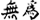

T'ai C'hi Chuan
Cos'è il T'ai C'hi Chuan?
E' un antichissima arte marziale cinese, risalente a più di 4000 anni fa, basata sul concetto taoista di Yin e Yang. T'ai C'hi Chuan significa "raggiungimento del controllo dell'energia suprema nel combattimento" e nel corso dei secoli si è evoluto in un raffinato esercizio per la salute. Si impara ad acquietare la mente e a raggiungere la piena integrazione tra mente, corpo e spirito eseguendo delle sequenze di movimenti lenti denominate "forme". Ogni movimento svolto stimola i 12 meridiani principali che favoriscono la circolazione dell'energia in tutte le parti del corpo. Torna su
Autodifesa
E' una disciplina totalizzante, in quanto sviluppa movimento, meditazione e difesa personale. I movimenti lenti presenti nelle forme studiate costituiscono anche delle tecniche di autodifesa che contrastano ogni sorta di aggressività e di attacco grazie a dei movimenti morbidi e fluidi. Torna su
Benefici per il corpo
Svolge un processo di modifica di alcuni aspetti all'interno del nostro corpo, favorendo un effetto benefico. Migliora la postura, la circolazione sanguigna, la coordinazione, l'equilibrio e l'elasticità tendinea. Praticando quest'arte, la scioltezza e il rafforzamento muscolare si equilibrano facendoci raggiungere la padronanza di noi stessi e lo sviluppo dell'energia interiore detta "C'hi". Torna su
Benefici per la mente
Genera rilassamento, sinonimo di calma e pace interiore, in quanto è meditazione un movimento. La pratica previene e combatte lo stress, la stanchezza e la depressione. Accresce la fiducia e lo sviluppo delle proprie capacità, la pazienza e la tolleranza, in virtù che costituiscono quel senso di libertà e armonia che accompagnano la nostra serenità. Si affina la capacità di analisi verso i problemi del quotidiano per sciogliere i nodi mentali, giungendo alla chiarezza mentale. Torna su
Stili praticati
-  Yang
- Sun
- Chen
- Kao Tibetano
Piano di studio preliminare
- Impostazione di base. Il rilassamento. L'allineamento. Filo a piombo. Il collegamento con padre cielo e madre terra. La ricerca della fluidità. Avvicinarsi all'elemento acqua.
- La camminata, il movimento e la coordinazione.
- Dinamica mentale.
- Ricerca e riconoscimento delle sensazioni corporee collegate ad una postura e ad un movimento corretti.
- Esercizi di scioglimento.
- Esercizi di qigong.
- Studio della postura.
- Tui shou: introduzione.
Piano di studio delle forme
- Yang 24 Siu-Beijin
- Yang Spada Kim Dao
- Yang 42 Yi-Shi-Quan
- Sun Chat-Sam-Sao
- Stile Tibetano Kao tibetano(t'ai c'hi dei lama)